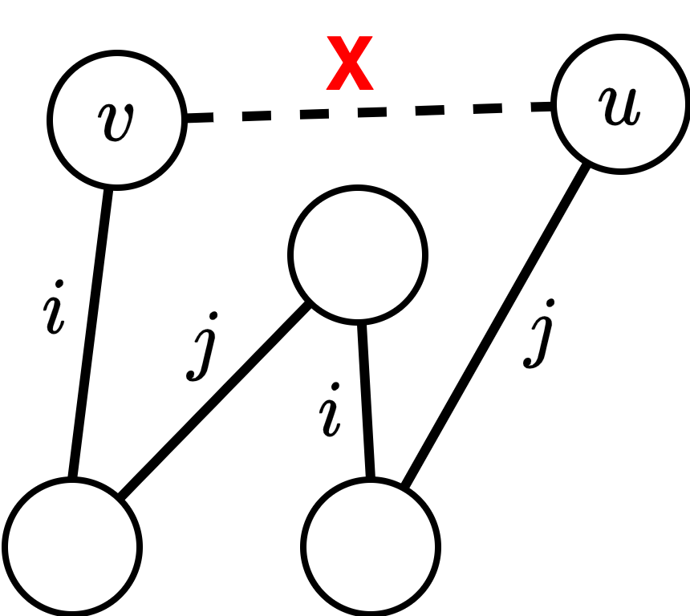
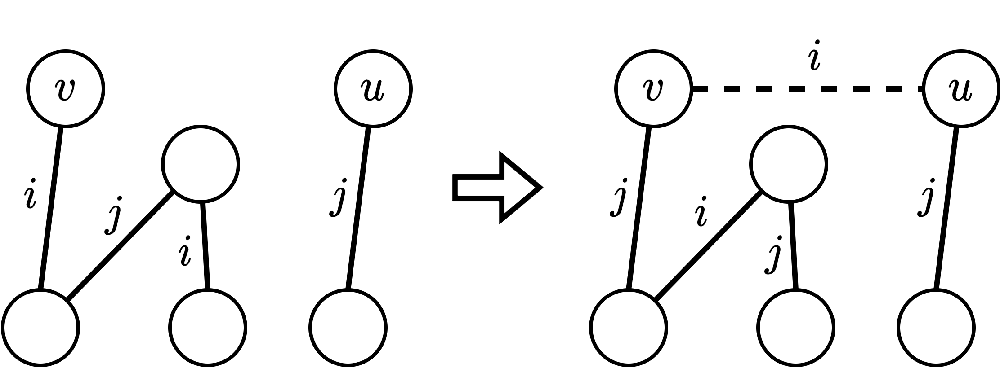
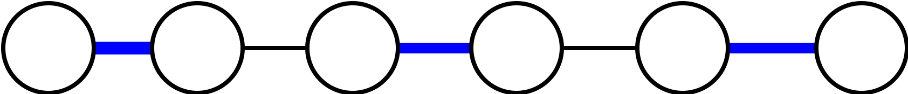
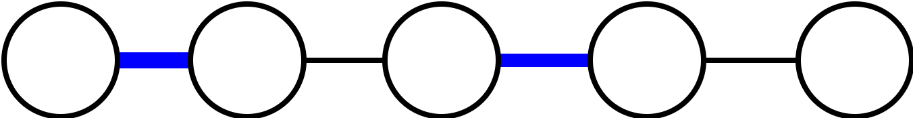

⚠ 转载请注明出处：作者：ZobinHuang，更新日期：May.1 2022

本作品由 ZobinHuang 采用 知识共享署名-非商业性使用-禁止演绎 4.0 国际许可协议 进行许可，在进行使用或分享前请查看权限要求。若发现侵权行为，会采取法律手段维护作者正当合法权益，谢谢配合。
目录
有特定需要的内容直接跳转到相关章节查看即可。
边着色的概念
问题引入
首先我们使用排课表的例子引出图的边着色问题: 假设有 `m` 位教师，`n` 个班级，其中教师 `x_i` 要给班级 `y_j` 上 `p_{ij}` 节课，求出如何在最少节次排完所有的课。由于一个老师和一个班级在同一个时段只能上一个课，因此问题的建模如
如果每个匹配中的边用同一种颜色染色，不同匹配中的边用不同颜色染色，则问题转化为在 `G` 中给每条边染色，相邻边染不同色，至少需要的颜色数.
相关概念定义
现在我们给出图边着色的一些相关概念。
设 `G` 是图，对 `G` 的边进行染色。若相邻边染不同颜色，则称对 `G` 进行
另外，如果能用 `k` 种颜色对图 `G` 进行正常边着色，称 `G` 是
最后，设 `G` 是图，对 `G` 进行正常边着色需要的最少颜色数，称为 `G` 的
图边着色的本质
对图的正常边着色，实际上是对 `G` 的边集合的一种划分，使得每个划分块是 `G` 的一个边独立集，图的边色数对应的是图的边独立集最小划分数。因此，图的边着色，本质上是对应实际问题中的 “划分” 问题或 “分类” 问题。
几类特殊图的边色数
完全二部图的边色数
对于完全二部图 `K_{m,n}`，对其边色数，我们有如下定理：
证明:
首先设 `X={x_1, x_2, ..., x_{m-1}}`, `Y={y_0, y_1, ..., y_{n-1}}`。
再设 `\Delta=n`，也即 `m \le n`。我们设 `\pi` 是 `K_{m,n}` 的一种 `n` 着色方案，颜色集合为 `{0,1,2,...,n-1}`。`\forall x_i y_j \in E(K_{m,n})`，`\pi` 的着色方案为:
下面我们证明 `\pi` 是一种正常边着色。对于 `K_{m,n}` 中的任意两条邻接边 `x_iy_j` 和 `x_iy_k`，若
则有 `(i+j) \mod n = (i+k) \mod n`，得到 `j=k`，矛盾，因此上面的着色是正常边着色，所以有 `\chi'(K_{m,n}) \le n`，又显然由于对于 `x_i` 来说，其邻接的 `n` 条边都需要着不同的颜色，因此 `\chi'(K_{m,n}) \ge \Delta = n`。综上可以得到 `\chi'(K_{m,n}) = \Delta`。
二部图的边色数
首先我们定义，设 `\pi` 是 `G` 的一种正常边着色。若点 `u` 关联边的着色没有用到颜色 `i`，则称
现在让我们来看关于二部图边色数的定理：
证明:
我们对 `G` 的边数 `m` 进行归纳：
当 `m=1` 时，`\Delta=1`，`G` 可以看做是一个完全二部图 `K_{1,1}`，因此我们有 `\chi'(G) = \Delta = 1`。
设对于小于 `m` 条边的二部图来说命题都成立。
设 `G` 是一个具有 `m` 条边的二部图，取 `uv \in E(G)`，考虑 `G_1=G-uv`，由归纳假设有:
这说明，`G_1` 存在一种 `\Delta(G)` 边着色方案 `\pi`。对于该着色方案，因为 `uv` 不存在，因此 `uv` 未着色，所以点 `u` 与 `v` 均至少缺少一种色。下面我们分情况讨论。
- 如果 `u` 与 `v` 均缺同一种色 `i`，则在 `G_1+uv` 中给 `uv` 着色 `i`，而 `G_1` 其它边，按 `\pi` 方案着色.这样得到 `G` 的 `\Delta` 着色方案，所以: `\chi'(G)=\Delta`
-
如果 `u` 缺色 `i`，而 `v` 缺色 `j`，但不缺色 `i`。设 `H(i,j)` 是图 `G_1` 中由 `i` 色边和 `j` 色边导出的子图。显然，该图的每个分支是 `i` 色边和 `j` 色边交替出现的路或者圈 (类似两个匹配对称差)。
对 `H(i,j)` 中包含点 `v` 的分支来说，因 `v` 缺色 `j`，但不缺色 `i`。所以, 在 `H(i,j) `中，点 `v` 的度为 `1`。这说明 `H(i,j)` 中含 `v` 的分支是一条路 `P` 而不是一个圈。
进一步地，我们可以说明，上面的路 `P` 不含点 `u`：如
3 所示，如果 `P` 含有点 `u`，那么 `P` 必然是一条长度为偶数的路。这样，`P+uv` 是 `G` 中的奇圈，这与 `G` 是二部图矛盾。既然 `P` 不含点 `u`，所以我们可以交换 `P` 中 `i` 和 `j` 的着色，而不破坏 `G_1` 的 正常边着色。使得交换着色后，`u` 与 `v` 均缺色 `i`，于是由情形 `1`，可以得到 `G` 的 `\Delta` 正常边着色，即证明 `\chi'(G) = \Delta`。
一般简单图的边色数
下面我们不加证明地给出一个引理：
下面我们给出一般图的边色数定理，也即
证明: 我们的证明过程稍微放松一点，对 `\chi'(G) \le \Delta + 1` 这个结论进行证明。我们对 `G` 的边数 `m` 进行归纳。
当 `m=1` 时，`\Delta=1`，由
设当边数少于 `m` 的时候，结论成立。下面考虑边数为 `m \ge 2` 的简单图 `G`。
设 `xy \in E(G)`，令 `G_1 = G-xy`。由归纳假设有:
于是 `G_1` 存在 `\Delta(G)+1` 正常边着色 `\pi`，显然 `G_1` 的每个顶点都至少缺少一种颜色 (i.e. 缺少新加进来的那种颜色)，根据
值得注意的是，我们上面只证明了 `\chi'(G) \le \Delta(G)+1` 这样一个较为松弛的结论，实际上 Viking 定理给出的是两个更紧的结论: `\chi'(G) = \Delta` 或者 `\chi'(G) = \Delta + 1`，我们在这里不对这两个紧的结论进行证明，但是我们在下面其它定理中会运用到这两个紧的结论。
我们把 `\chi'(G) = \Delta(G)` 的简单图称为
Vizing 定理还可以拓展到边可重的图:
几类特殊图的边色数
下面我们给出几类特殊图的边色数关系，这些定理将这些特殊图归类为第一类图或者第二类图。
第一类图的特殊图
证明:
这个定理中，结论成立的情况一共有两种。在证明过程中，结合
-
若简单图 `G` 恰有一个最大度点 `u`，取 `u` 的一个邻点 `v`，作 `G_1=G-uv`，那么 `\Delta(G_1) \le \Delta(G)-1`。由
4 可得:`\chi'(G_1) \le \Delta(G_1)+1 = (\Delta(G)-1)+1 = \Delta(G)`于是 `G_1` 是可 `\Delta (G)` 正常边着色的，因为 `G_1` 的每个顶点都至少缺少一种颜色，所以由引理 `G_1+uv=G` 是可 `\Delta(G)` 正常边着色的，即:
`\chi'(G) = \Delta(G)` -
若简单图 `G` 恰好有两个相邻的最大度点 `u` 和 `v`。设 `G_1=G-uv`，那么 `\Delta(G_1)=\Delta(G)-1`。同理由
4 可得:`\chi'(G_1) \le (\Delta(G)-1)+1 = \Delta(G)`于是 `G_1` 是可 `\Delta (G)` 正常边着色的，因为 `G_1` 的每个顶点都至少缺少一种颜色，所以由引理 `G_1+uv=G` 是可 `\Delta(G)` 正常边着色的，即:
`\chi'(G) = \Delta(G)`
第二类图的特殊图
下面给出另一个定理：
为了证明
证明:
考虑最极端的情况，图 `G` 的每一个顶点的度数不超过 2 (i.e. 最小化边之间邻接的可能性)，也即 `G` 是一条路，此时 `G` 中一共有 `n-1` 条边，并且 `G` 的边色数 `\chi'(G)=2`。则有:
-
若 `n` 是偶数，则一种颜色可以最多使用 `\ceil{\frac{n-1}{2}}` 次;
 -
若 `n` 是偶数，则一种颜色可以最多使用 `\frac{n-1}{2}` 次;

综上，一种颜色能使用至多 `\ceil{\frac{n-1}{2}}` 次。
基于
若不然，由
设 `\pi` 是 `G` 的 `\Delta (G)` 正常边着色方案，基于
下面我们给出另一个定理:
证明:
设 `n=2k+1`，又由于 `G` 是奇数阶 `\Delta` 正则简单图，可得:
由
边着色的应用
排课表问题
在一个学校中，有 `7` 个教师 `12` 个班级。在 `5` 天教学日条件下，教课的要求由如下矩阵给出:
其中，`p_{ij}` 表示教师 `x_i` 必须教 `y_j` 班的节数，求: 一天分成几节课，才能满足所提出的 `5` 天教学日的要求?
问题可以被建模为一个二部图问题 (i.e. 班级 `y_j` & 老师 `x_i`)，找出这个二部图的最大度 (i.e. 教师 `x_1` 的度数为 35)，即可得到这个二部图的边色数 (`\chi'(G) = \Delta(G) = 35`)，则可得最少的总课时为 35 节课，因此每天需要安排 7 节课。
比赛安排问题
Alvin (A) 曾邀请 3 对夫妇到他的避暑别墅住一个星期，他们是: Bob 和 Carrie, David 和 Edith, Frank 和 Gena。由于这 6 人都喜欢网球运动，所以他们决定进行网球比赛。6 位客人的每一位都要和其配偶之外的每位客人比赛。另外，Alvin 将分别和 David, Edith, Frank, Gena 进行一场比赛。若没有人在同一天进行 2 场比赛，则要在最少天数完成比赛，如何安排?
用点表示参赛人，两点连线当且仅当两人有比赛，这样得到如
由于 `n=2 \times 3 + 1`，故 `k=3`，每天最多有三场比赛，而 `\Delta=5`，有 `m=16 > 3 \times 5 = k \Delta`，所以由